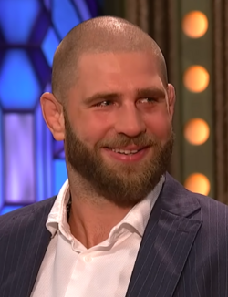

Jiří Procházka sa narodil 14. októbra 1992 v Hostěradiciach.Procházka bol šampiónom UFC v ľahkej ťažkej váhe!
Jeho bojový štýl je agresívny, nepredvídateľný a inšpirovaný samurajskou filozofiou.
Má neuveriteľný knockout power a jeho zápasy sú vždy nezabudnuteľné.
Prezývka: Denisa — meno ktoré si sám zvolil ako bojovník.
Narodený: 14. október 1992 Amatérska kariéra: ukončená
Procházka je známy svojou neuveriteľnou vôľou a nikdy sa nevzdáva.
Procházka je prvý Čech v histórii, ktorý získal titul šampióna UFC.
| Zápas | Súper | Výsledok | Rok |
|---|---|---|---|
| UFC 275 | Glover Teixeira | Výhra (TKO) | 2022 |
| UFC 282 | Alex Pereira | Prehra (KO) | 2022 |
| UFC 295 | Alex Pereira | Prehra (TKO) | 2023 |
| UFC 300 | Alex Pereira | Prehra (KO) | 2024 |